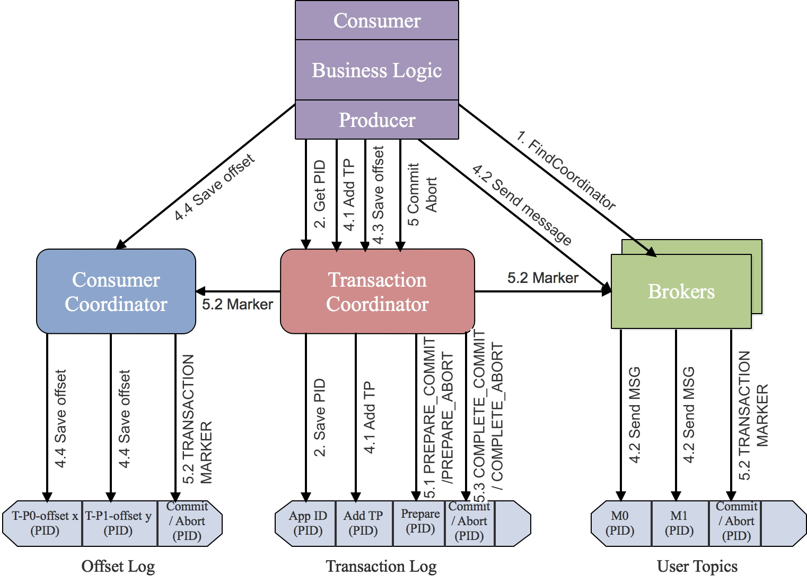

Ch10-Kafka 之事务
April 18, 2019
kafka Transaction.
1. 幂等性发送 #
为了实现 Producer 的幂等语义，Kafka 入了 Producer ID（即 PID）和 Sequence Number。每个新的 Producer 在初始化的时候会被分配一个唯一的 PID，该 PID 对用户完全透明而不会暴露给用户。
对于每个 PID，该 Producer 发送数据的每个<Topic, Partition>都对应一个从 0 开始单调递增的 Sequence Number。类似地，Broker 端也会为每个<PID, Topic, Partition>维护一个序号，并且每次 Commit 一条消息时将其对应序号递增。对于接收的每条消息，如果其序号比 Broker 维护的序号（即最后一次 Commit 的消息的序号）大一，则 Broker 会接受它，否则将其丢弃：
- 如果消息序号比 Broker 维护的序号大 1 以上，说明中间有数据尚未写入，也即乱序，此时 Broker 拒绝该消息，Producer 抛出 InvalidSequenceNumber
- 如果消息序号小于等于 Broker 维护的序号，说明该消息已被保存，即为重复消息，Broker 直接丢弃该消息，Producer 抛出 DuplicateSequenceNumber
该幂等设计只能保证单个 Producer 对于同一个<Topic, Partition>的 Exactly Once 语义，它并不能保证写操作的原子性——即多个写操作，要么全部被 Commit 要么全部不被 Commit。
2. 事务支持 #
为了支持事务，Kafka 引入了两个新的组件：Transaction Coordinator 和 Transaction Log。Transaction Coordinator 并不是一个单独的进程，而是 Broker 内部的一个线程，Transaction Log 则以 __transaction_state 这么个内部 Topic 形式存在。Transaction Log 每个分区都有一个 leader，该 leade 对应哪个 kafka broker，哪个 broker 上的 transaction coordinator 就负责对这些分区的写操作，其可靠性主要有 Kafka 自身的可靠性机制保证。

整个事务的执行过程如下所示。
- KAFKA 生产者通过 initTransactions API 将自定义的 transactional.id 注册到 transactional coordinator。此时 coordinator 会关闭所有有相同 transactional.id 且处于 pending 状态的事务，同时也会递增 epoch 来屏蔽僵尸生产者（zombie producers）。该操作对每个 producer session 只执行一次
producer.initTransaction()。 - KAFKA 生产者通过 beginTransaction API 开启事务，并通过 send API 发送消息到目标 topic。此时消息对应的 partition 会首先被注册到 transactional coordinator，然后 producer 按照正常流程发送消息到目标 topic，且在发送消息时内部会通过校验屏蔽掉僵尸生产者
producer.beginTransaction();producer.send()*N;。 - KAFKA 生产者通过 commitTransaction API 提交事务或通过 abortTransaction API 回滚事务。此时会向 transactional coordinator 提交请求，开始两阶段提交协议
producer.commitTransaction();producer.abortTransaction();- 第一阶段，transactional coordinator 更新内存中的事务状态为“prepare_commit”，并将该状态持久化到 transaction log 中
- 第二阶段，coordinator 首先写 transaction marker 标记到目标 topic 的目标 partition，在向目标 topic 的目标 partition 写完控制消息后，会更新事务状态为“commited”或“abort”，并将该状态持久化到 transaction log 中。
3. 事务对性能的影响 #
3.1 对 Producer 的影响 #
开启事务后，producer 有些许写放大，这主要涉及到：
- 事务开始前，producer 需要将生产的消息的 partition 注册到 transaction coordinator，这涉及到 rpc 调用；
- 事务结束时，transaction coordinator 需要注入 transaction marker 到消息对应的 Partition, 这也涉及到 rpc 调用；
- 事务进行过程中，transaction coordinator 需要将事务状态如“prepare_commit” “complete_commit”等持久化到 transaction log，这涉及到磁盘写；但由于以上写操作的时间复杂度，更多是跟消息涉及到的分区个数相关，而不是跟消息的具体条数相关，且 KAFKA 通过 batch 机制尽量减小了 RPC 调用次数，所以对 Producer 的性能影响并不大；
- Confluent 官网有性能测试相关博文，其中讲到“for a producer producing 1KB records at maximum throughput, committing messages every 100ms results in only a 3% degradation in throughput. Smaller messages or shorter transaction commit intervals would result in more severe degradation.“，即在他们的测试场景下，开启事务后性能只有 3% 的下降；
3.2 对 Consumer 的影响 #
开启事务后，对 consumer 的性能影响相对对 producer 的性能影响更小，consumer 仍然是轻量级高吞吐的，几乎没有性能影响：
- consumer 在 read_committed 模式下，只需要额外做一些消息的过滤，即过滤掉回滚了的事务的 message，和 open 状态的事务的 message；但过滤这些消息时，因为 topic 中存储的消息包括正常的数据消息和控制消息，这些消息包含了足够的元数据信息来支持消息过滤，所以 Kafka consumer 不需要跟 transactional coordinator 进行 rpc 交互；
- consumer 也需要缓存读取的消息以等待事务的结束，而且由于底层仍然可以使用 zero-copy 机制来读取消息，所以相对于没有开启事务的 consumer，性能几乎没有影响。